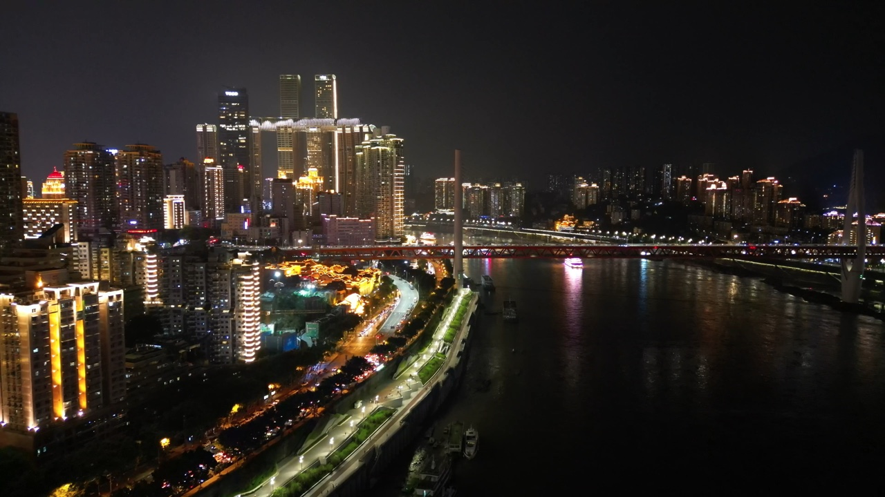

重庆市
楼从江边一层层长上去，夜里全亮起来

重庆是一座需要重新学习方向感的城市：地图上的 500 米可能是三层楼的高度。住观音桥比解放碑舒服，晚上安静、吃的也地道。远程工作的设施齐全，生活成本比同级别城市低。
一句话：烟火气足、物价便宜、地铁发达，代价是潮湿、坡坎和七八月的酷热。
渝中区（解放碑、观音桥）：最方便，也最吵、最贵；
南岸、九龙坡：性价比高，进城方便；
沙坪坝：学生气重，吃的便宜；
江北：通勤友好，写字楼集中。
主城合租单间：1200–2200 元；
整租一居：2000–3500 元。
同样地段，重庆的房租大概是一线城市的四成。
【网速】主城 200–1000M，覆盖很好。
首选：3–5 月、10–11 月；
7–8 月是出了名的火炉，闷热难熬，没空调的老房子直接排除；
冬天湿冷、日照少。
【单人月均】大约 4500 元。
【交通】地铁加轻轨非常发达，不需要买车；但地形起伏大。
一、导航上的距离不等于步行距离。看房前用街景确认一下沿途有没有台阶、天桥和绕行，重庆的"五百米"有时候要爬十层楼。
二、"江景房"在重庆常指隔江远眺，不是临江。真临江的房源很少，价格另算。
三、七月八月没有空调的老房子别考虑，室内体感能到 40℃ 以上。
四、游客区的火锅、小面价格是本地价的一点五倍以上。想按真实消费判断，往居民区走两条街。
主城 200–1000 Mbps，覆盖很好；
咖啡馆密度高，但商圈店下午容易满座，建议认准几家固定的；
房租便宜，同样预算能租到带独立书房的房子；
夏天电费和爬坡通勤是两个容易被低估的成本。
这只是静态版。互动版里能看到重庆的实拍短片、按月的气候图，以及住过这里的人写的笔记。
在栖旅里打开重庆 →